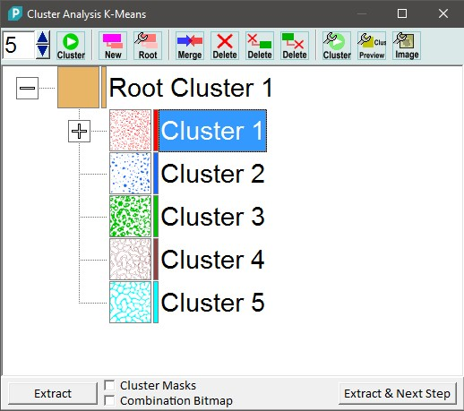
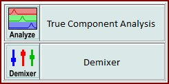
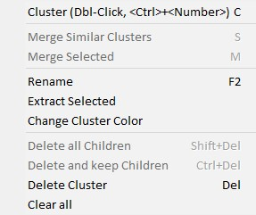
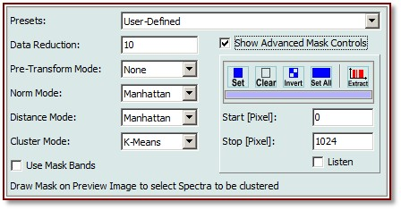
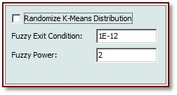
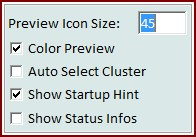
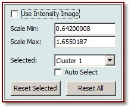
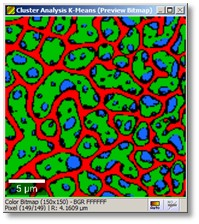
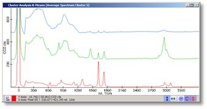
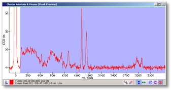

|
描述
聚类分析对话框自动在图像光谱数据对象中寻找相似的光谱，并创建相应的聚类平均光谱以及聚类分布图。
另请参阅
输入与结果
输入：
一个高光谱数据对象。
结果：
用户界面

聚类数目（整数编辑框/上下按钮）：
设置用于后续聚类分析的聚类数。
聚类（开始聚类分析）：
使用当前选定的聚类节点开始聚类分析。如果之前未创建根聚类，将创建新的根聚类并自动聚类（使用当前的根聚类创建选项）。
新建（创建新根聚类）：
使用当前的根聚类创建选项创建新根聚类。
根（显示根聚类选项）：
显示根聚类选项。
合并（合并所选聚类）：
使用 OR 操作将所选聚类合并到一个新聚类中（即新合并的聚类包含所有合并聚类的所有像素）。
删除（删除所选聚类）：
递归删除所有选定聚类。
删除（删除并保留子级）：
删除选定聚类并保留子聚类（"子级"），将它们移动到被删除的原始聚类（"父级"）的树级别。
删除（仅删除所有子级）：
删除选定聚类的所有子级，同时保留选定父聚类的存在。
聚类（显示聚类算法选项）：
显示聚类算法选项。
预览（显示预览选项）：
显示预览选项。
图像（显示强度图像选项）：
显示强度图像选项。
提取（按钮）：
提取所有选定聚类的平均光谱。
聚类掩模（复选框）：
如果勾选，按下提取按钮时会额外提取聚类掩模/分布图像。
组合位图（复选框）：
如果勾选，按下提取按钮时会额外提取当前的组合预览位图。
提取并下一步（按钮）：
向导功能：您可以将聚类结果光谱用于真组分分析或解混：

上下文菜单
您可以右键点击聚类结果以打开上下文菜单：

聚类
这将对当前选定的根聚类/聚类结果/子聚类执行聚类分析。
合并相似聚类
合并两个彼此最相似的子聚类。仅适用于具有子聚类结果的聚类。
合并所选
将所有选定聚类合并为一个更大的聚类，并将选定聚类作为子聚类添加。
重命名
重命名选定聚类。该名称用于提取的数据对象中。
提取所选
将选定的聚类提取到项目中（平均光谱 + 聚类分布图）。
更改聚类颜色
更改聚类的颜色（聚类分布图和平均光谱）。
删除所有子级
删除选定父聚类的所有子级/子聚类，但保留父聚类。
删除并保留子级
删除选定聚类并将子聚类上移一级。
删除聚类
删除选定聚类和所有子聚类。
全部清除
删除所有内容，所有根聚类及子聚类。

预设（组合框）：
可以选择预定义的根聚类选项之一：
数据缩减（整数编辑框）：
数据缩减意味着给定数量的光谱像素被平均并用作聚类分析算法的一个属性，而不是所有单个像素。
预变换模式（组合框）：
在聚类分析中使用之前变换输入光谱：
归一化模式（组合框）：
在聚类分析中使用之前归一化输入光谱：
另请参阅光谱归一化（数学）。
距离模式（组合框）：
定义计算光谱相似度/距离的距离模式：
另请参阅光谱归一化（数学）。
聚类模式（组合框）：
定义聚类模式：
使用掩模带（复选框）：
如果勾选，预览窗口中的每个掩模带将作为聚类分析算法的一个属性（而不是光谱中的单个像素）。
高级掩模控件（编辑框和工具按钮）：
您可以更改聚类掩模以定义应考虑哪些像素用于聚类分析算法。这些编辑是可选的，您可以直接在预览图谱查看器中更改掩模。

随机 K-Means 分布（复选框）：
如果勾选，K-Means 起始迭代以真正的随机聚类分布开始。如果未勾选，像素按顺序分配到聚类中（按聚类数取模：1, 2, 3, 1, 2, 3, ...）。后者将对相同的根聚类选项和掩模产生相同的结果。
模糊退出条件（浮点编辑框）：
定义迭代模糊聚类算法的退出条件。
模糊幂（浮点编辑框）：
影响模糊聚类算法的结果。

预览图标大小（整数编辑框）：
定义聚类树预览缩略图的图标大小。
彩色预览（复选框）：
如果勾选，聚类树预览缩略图使用其聚类颜色。如果未勾选，使用标准黑-黄配色方案。
自动选择聚类（复选框）：
如果勾选，当鼠标光标在图像查看器中点击并移动时，聚类节点将自动选择。注意，如果您有多个根聚类，仅选择当前选定聚类的子聚类或同级（同一级别的聚类）。
显示启动提示（复选框）：
如果勾选，聚类分析对话框将显示一个小型启动提示/向导。
显示状态信息（复选框）：
如果勾选，底部状态栏中会显示有关当前根聚类/选定聚类的一些状态信息。

使用强度图像（复选框）：
如果勾选，K-Means 聚类预览图像——以及提取的图像——不显示布尔聚类分布图，而是显示强度图像，显示光谱到其聚类平均光谱的"距离"（参见根聚类选项中的"距离模式"）。即强度图像中的单个像素越亮，所选光谱与其平均聚类光谱的相似度越高。这可以用于在同一聚类内找到可能暗示另一组分的结构。
比例 最小/最大（浮点编辑框）：
可以在聚类树视图中选择多于 1 个聚类，在预览图像查看器中一起显示它们。您可以分别更改每个选定聚类的强度比例。
已选（组合框）：
比例 最小/最大编辑框作用于该窗口中选定的聚类。
自动选择（复选框）：
如果勾选，该窗口中的选定聚类会通过点击图像来更改。
重置所选（按钮）：
重置该窗口中选定聚类的比例。
全部重置（按钮）：
重置聚类树中所有选定聚类的所有比例。

预览图像查看器显示选定的聚类分布图。

第一个预览图谱查看器显示所有选定聚类的平均光谱。

第二个预览图谱查看器显示原始光谱和聚类掩模。在开始聚类分析之前，您可以在此更改聚类掩模，以定义光谱（或掩模带）的哪个部分应用于聚类分析。